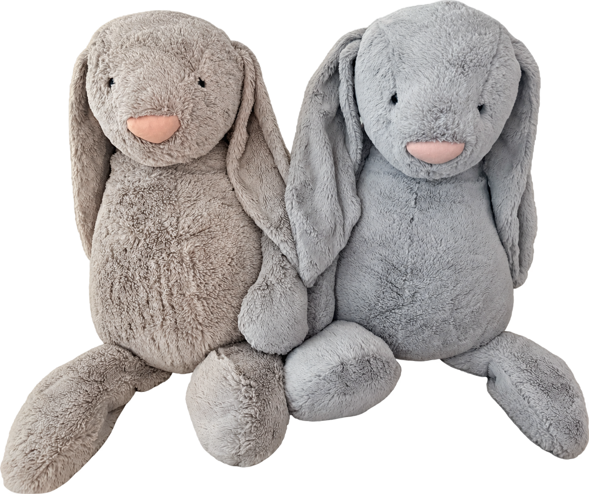

The Thanksgiving Twins
Thanksgiving, 2021
My boyfriend meant to send me one big bunny for Thanksgiving in 2021. He accidentally used his billing address as the shipping address, so the bunny arrived at his own home. He ordered another one for me, and that is how we ended up with two. A little address mix-up became a pair we could share.